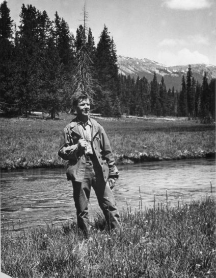
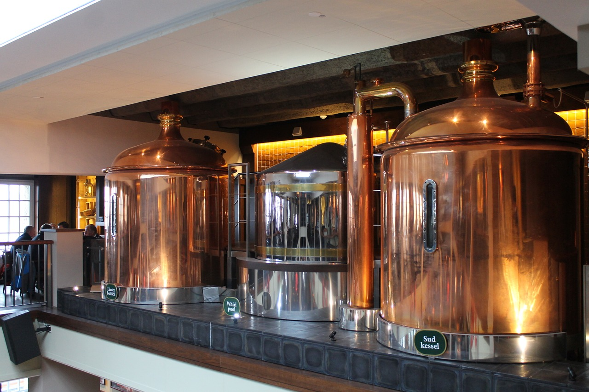

Proudly Brewing Quality Beer Since 1984
We have been providing unique and high quality beer since Cleveland Brewery was founded in 1984 by Billy Bob. Billy Bob brewed beer since he was 17. At first he brewed standard beers for his friends and family. The beer he brewed was universally seen as higher quality than anything bought in a store. This was in part due to the extra care he took and only using the best best ingredients. He later began to experiment and grew his operations until he decided to begin selling it to people he knew. When he hit the age of 18 in 1984 he officially started the Cleveland Brewery. A year later he bought a large building capable of brewing beer and having a large tasting room for patrons, which is the building he operate out of to this very day.

Our Facilities
Our brewing facilities are kept to a high standard of cleanliness (as can be seen below). We abstain from some of the modern equipment that large scale brewing companies use. Because of that our beer has a more natural, raw flavor. Our tasting room has a antique feeling with the exposed brick and antique furniture.
